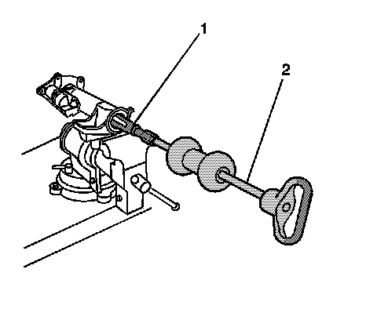
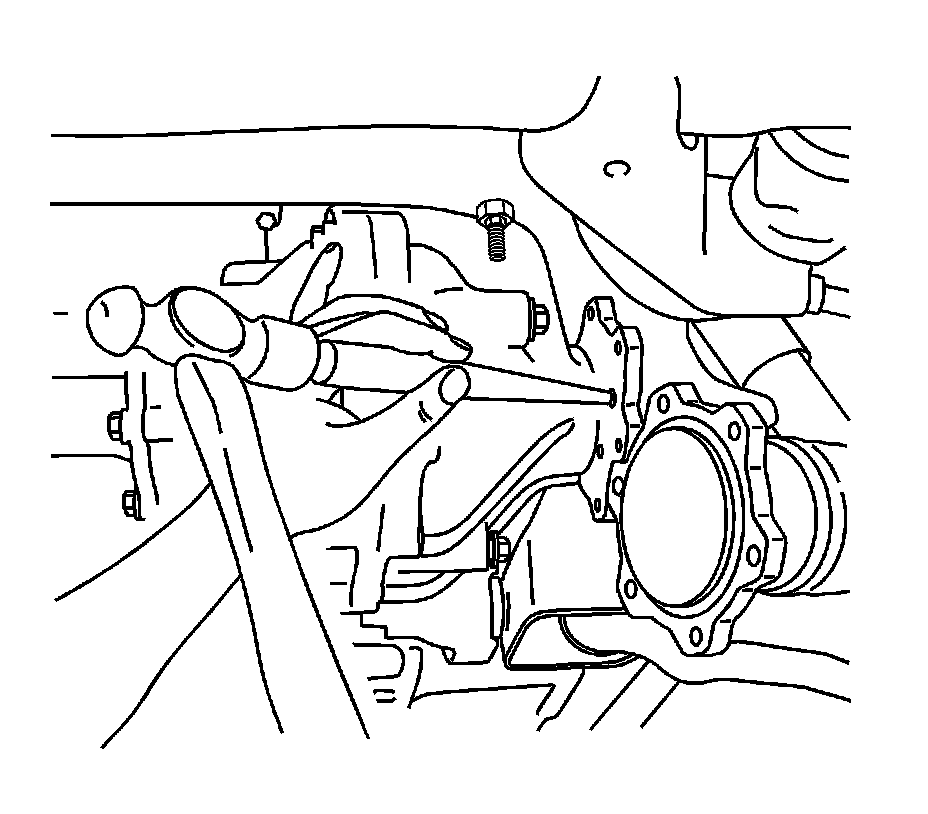
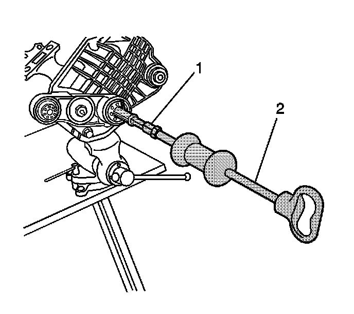
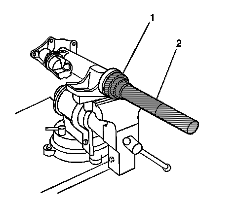
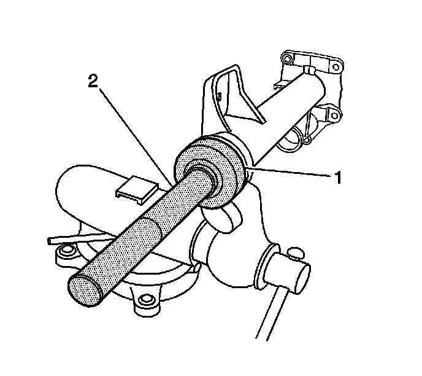
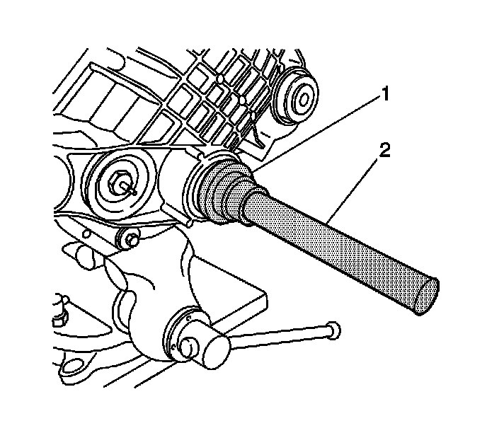
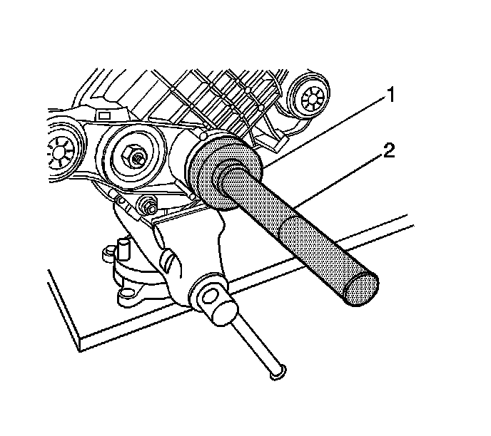
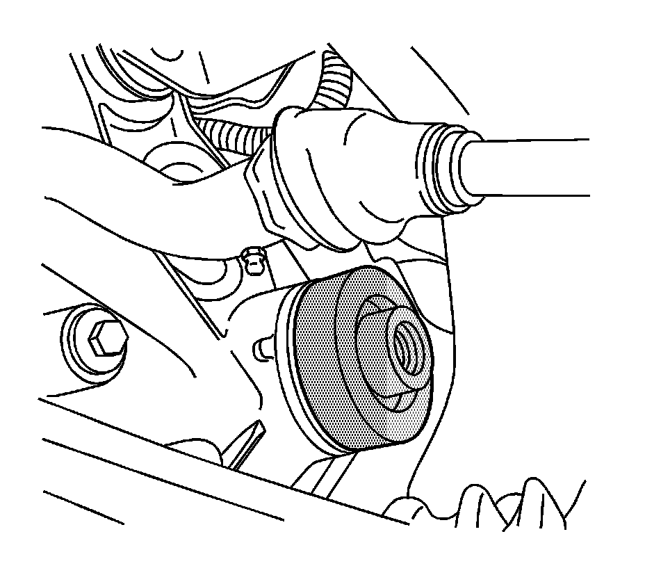
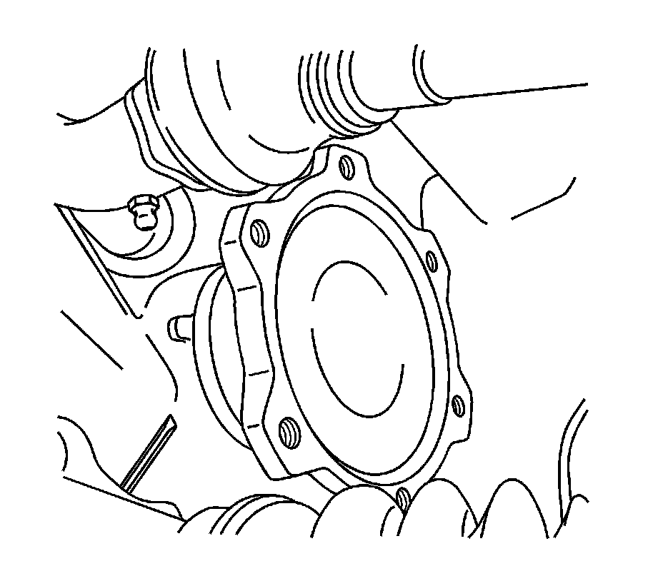

Differential Output Shaft Bearing: Service and Repair
Front Drive Axle Inner Shaft Seal and Inner Shaft Bearing Replacement
Tools Required
^ J 8092 Universal Driver Handle - 3/4 in - 10
^ J 2619-01 Slide Hammer
^ J 29369-1 Bushing and Bearing Remover
^ J 29369-2 Bushing and Bearing Remover (2-3 inch)
^ J 36609 Axle Tube Bearing Installer
^ J 45225 Axle Seal Installer
Removal Procedure
1. Raise the vehicle. Refer to Lifting and Jacking the Vehicle.
2. Drain the differential carrier assembly. Refer to Front Axle Lubricant Replacement.
3. Remove the right side seal and/or bearing by performing the following steps:
1. Remove the inner axle shaft and housing assembly from the differential carrier case assembly.
2. Remove the clutch fork assembly components and the inner axle shaft from the inner axle shaft housing.
3. Install the inner axle shaft housing into a vise.
Clamp only on the mounting flange of the inner axle shaft housing.
4. Install the J 29369-1, 8.25 inch axle, or the J 29369-2, 9.25 inch axle, behind the inner axle shaft seal or the inner axle shaft bearing as necessary.

5. Install the J 2619-01 (2) to the J 29369-1 or the J 29369-2 (1).
6. Remove the inner axle shaft seal and/or the inner axle shaft bearing using the J 2619-01.

Important: Support the wheel drive shaft in order to not over flex the CV joint.
4. If only replacing the left side seal, perform the following steps:
1. Place an alignment mark between the inner axle shaft and the wheel drive shaft.
2. If servicing the 8.25 inch axle, remove the shock module. Refer to Shock Module Replacement.
3. Disconnect the wheel drive shaft from the inner axle shaft.
4. Remove the inner axle shaft using a hammer and a brass drift.
5. Remove the inner axle shaft seal using a suitable seal remover tool.

5. If replacing both the left side seal and bearing, perform the following steps:
1. Remove the differential carrier assembly.
2. Place the differential carrier assembly into a vise.
Clamp only on the mounting flange of the differential carrier assembly case.
3. Remove the inner axle shaft using a hammer and a brass drift.
4. Install the J 29369-1, 8.25 inch axle, or the J 29369-2, 9.25 inch axle (1), behind the inner axle shaft seal or the inner axle shaft bearing as necessary.
5. Install the J 2619-01 (2) to the J 29369-1 or the J 29369-2.
6. Remove the inner axle shaft seal and/or the inner axle shaft bearing using the J 2619-01.
Installation Procedure

1. Install the right side bearing with the square shoulder in using the J 36609 (1) and the J 8092 (2).

2. Install the new axle shaft seal using the J 45225 (1) and the J 8092 (2).
3. Install the inner axle shaft into the inner axle shaft housing.
Carefully tap the inner axle shaft into place with a soft-faced mallet.
4. Install the inner axle shaft and clutch fork assembly components into the inner shaft housing.
5. Install the inner axle shaft and housing assembly to the differential carrier case assembly.

6. If both the left side bearing and seal was removed, perform the following step. Install the left side bearing with the square shoulder in using the J 36609 (1) and the J 8092 (2).

7. If both the left side bearing and seal was removed, perform the following step. Install the new axle shaft seal using the J 45225 (1) and the J 8092 (2).
8. If both the left side bearing and seal was removed, perform the following step. Install the inner axle shaft into the differential case side gear using a soft-faced mallet until the retaining ring on the inner axle shaft is fully seated within the groove in the differential case side gear.
Pull back on the inner axle shaft to ensure that the inner axle shaft is properly retained in the differential case side gear.
9. If both the left side bearing and seal was removed, perform the following step. Install the front differential carrier assembly.

10. If only the left side seal was removed, perform the following step. Install the seal using the J 45225 and a soft-faced mallet.
Tap only on the center portion of the J 45225 in order to drive the seal in evenly.

11. If only the left side seal was removed, perform the following step. Install the inner axle shaft into the differential case side gear using a soft-faced mallet until the retaining ring on the inner axle shaft is fully seated within the groove in the differential case side gear.
Pull back on the inner axle shaft to ensure that the inner axle shaft is properly retained in the differential case side gear.
12. If servicing the 8.25 inch axle, install the shock module.
13. If only the left side seal was removed, perform the following step. Install the wheel drive shaft to the inner axle shaft.
Notice: Refer to Fastener Notice.
14. If only the left side seal was removed, perform the following step. Install the wheel drive shaft to the inner axle shaft bolts.
Tighten the wheel drive shaft to inner axle shaft bolts to 79 N.m (58 lb ft).
15. Fill the differential carrier assembly. Use the correct fluid. Refer to Front Axle Lubricant Replacement.
16. Lower the vehicle.